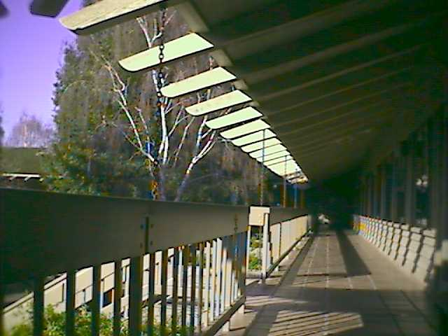

I worked at AT&T in Holmdel, NJ and Menlo Park, CA, from 1995 until
2000.
In Holmdel, NJ, I shared an office with a coworker. When I moved to
Menlo Park, CA, I shared a small room with two other people before
finally getting my own office. It had a door that I could close
(but not lock). Here is a picture of me in that office in Menlo
Park, CA.
In Holmdel, NJ, none of the offices had windows. In Menlo Park, CA,
pretty much all the offices had a window, except for the small room
I occupied upon my arrival. This was the view from my window in
Menlo Park, CA. It opened on the courtyard in the middle of the
building which had a water fountain in the center.

In New Jersey, I had to drive to work. There was a lot of parking
space around the building.